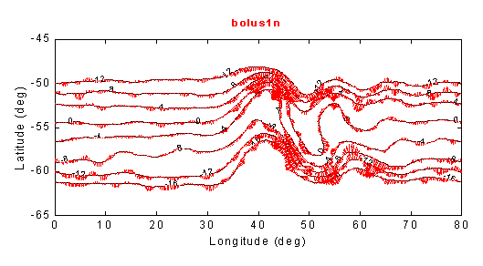
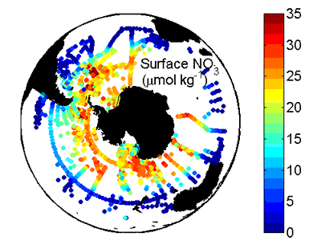

Past Research Projects: Southern Ocean
1) Antarctic Circumpolar Current Eddy Dynamics
|  |
| Peter Rhines and I worked on the eddy dynamics of deep water flow across the Antarctic Circumpolar Current (ACC), and its relation to bottom topographic form stress. This is a large numerical modeling effort, using an idealized geometry and a novel analysis scheme. We have analyzed the poleward flux of mass between density surfaces due to eddies. We orient the flux calculations to be along the curving paths of the time-mean geostrophic flow, which has a fixed spatial structure due to the bottom topography. We find that the eddy transports across these paths are localized within the strong eddy-energy regions in the lee of topographic features (MacCready and Rhines, 2001). This result has been suggested before, but never seen in numerical analyses, due to the difficulty of working on arbitrary curved paths. At the left is are numerical results, showing the time-mean meridional transport due to eddy geostrophic bolus flux normal to the time mean upper layer geostrophic streamfunction. |
2) Nitrate Budget of the Southern Ocean Mixed Layer
|  | The second Southern Ocean project is a collaboration with Paul Quay (UW Chemical Oceanography) and is part of U.S. JGOFS (Joint Global Ocean Flux Study). As a framework for analysis of Paul's 13C data I have constructed a data-driven model of the annual cycle of property evolution in the Southern Ocean mixed layer. The model relies on historical data in order to define the basic fluid evolution (such as the depth and properties of the mixed layer) instead of using an analytical or numerical model to predict those properties. We use the model with observed nitrate values to predict biological productivity. Plotted at the left are surface nitrate values from all available WOCE, JGOFS, and NODC data. The potential for strong Southern Ocean productivity is clear in the high nutrient values there. |
REFERENCES
- MacCready, P., and P. B. Rhines (2001) Meridional Transport Across a Zonal Channel: Topographic Localization. J. Phys. Oceanogr., 31, 1427-1439.
- MacCready, P. and P. Quay (2001) Biological Export Flux in the Southern Ocean Estimated from a Climatological Nitrate Budget. Deep-Sea Res., 49.